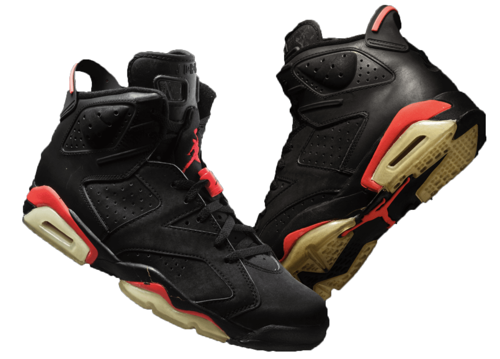
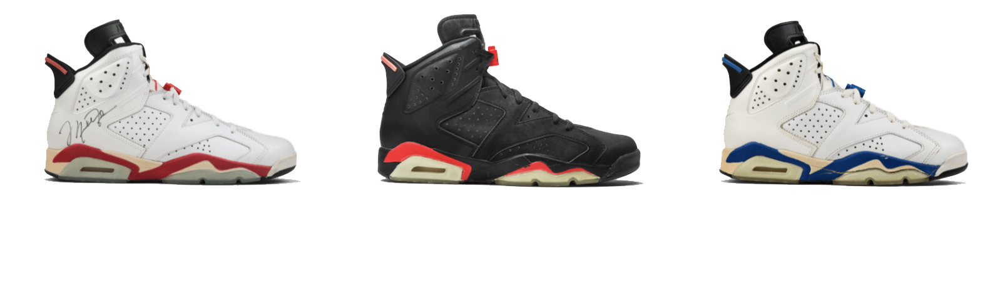
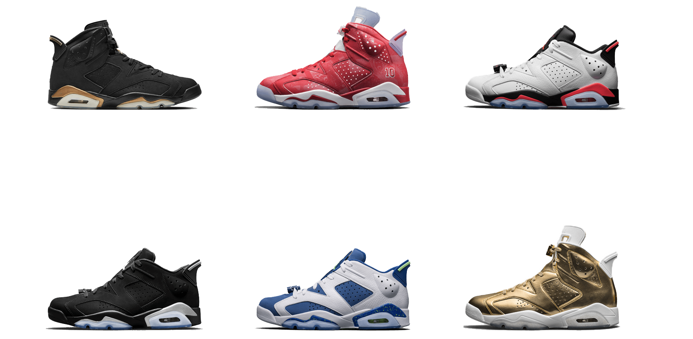
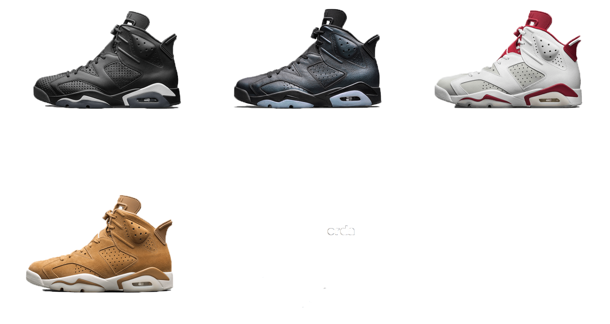

During the 1990–91 season, in the face of a cool adversity from their long-standing Detroit rivals, the Bulls stayed strong to advance to The Finals for the first time ever. There, Jordan’s mid-air elegance was put on full display. And it was while wearing a pair of Air Jordan VIs that Michael Jordan claimed his first championship title.
The design of the AJ VI silhouette was famously inspired by MJ’s German sportscar. It’s very essence conveyed speed and class, laden with touches like a neoprene sleeve, a translucent rubber sole and visible air. As if to validate these design decisions, the AJ VI could be found on the feet of several of pop culture’s iconic figures during its debut year.



